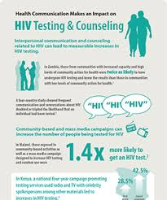
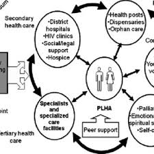
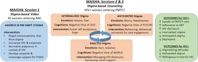

WELCOME IN GATSATA SECTOR
Certainly! Here's an introduction about HIV counseling and testing services offered at Gatsata Health Center:
Welcome to Gatsata Health Center
At Gatsata Health Center, we are committed to providing comprehensive healthcare services to our community. As part of our commitment to promoting health and well-being, we offer HIV counseling and testing (HCT) services.
What is HIV Counseling and Testing?
HIV counseling and testing, often referred to as HCT, is a vital component of HIV prevention, treatment, and care. It involves providing individuals with information about HIV transmission, risk reduction strategies, and the importance of knowing one's HIV status. Counseling also addresses the emotional and psychological aspects of HIV testing, helping individuals cope with anxiety, fear, and stigma associated with HIV.
Our Approach
At Gatsata Health Center, we recognize the importance of providing confidential and non-judgmental HIV counseling and testing services. Our trained counselors are dedicated to creating a supportive and empowering environment for individuals seeking HIV testing. We adhere to strict confidentiality protocols to ensure privacy and respect for every individual's right to confidentiality.
Why Get Tested?
Knowing your HIV status is the first step towards taking control of your health. Early detection of HIV allows for timely access to life-saving treatment and care. By getting tested, you not only protect your own health but also contribute to HIV prevention efforts in our community.
What to Expect
When you visit Gatsata Health Center for HIV counseling and testing, you can expect to receive personalized counseling from our compassionate and experienced counselors. Counseling sessions are designed to address your specific concerns and provide you with the information and support you need to make informed decisions about HIV testing.
Confidentiality
Your privacy is our priority. All HIV testing and counseling sessions are conducted in a confidential manner, and your test results will only be disclosed to you. We adhere to strict confidentiality guidelines to ensure that your personal information remains protected at all times.
Take Control of Your Health
Don't wait. Take control of your health today by getting tested for HIV at Gatsata Health Center. Our friendly staff is here to support you every step of the way. Together, we can work towards a healthier and HIV-free community.
For more information or to schedule an appointment for HIV counseling and testing, please contact us or visit our health center.
Feel free to modify the introduction to better suit the tone and style of Gatsata Health Center.

Certainly! Here are the importance of HIV testing and counseling broken down:
1.Early Detection and Treatment:
One of the most crucial aspects of HIV testing is early detection. Detecting HIV infection early allows for prompt initiation of treatment, which can significantly improve health outcomes and prolong life expectancy.
2.Antiretroviral therapy (ART)
is highly effective in suppressing the replication of the HIV virus, reducing the viral load in the body, and slowing down the progression of the disease. However, its effectiveness is highest when treatment is initiated early in the course of infection.
Regular HIV testing ensures that individuals living with HIV can access treatment as soon as possible, leading to better management of the virus and reducing the risk of developing AIDS-related complications.
3.Prevention and Transmission Control:
Knowing one's HIV status is crucial for preventing the transmission of the virus to others. Individuals who are aware of their HIV-positive status can take appropriate measures to prevent the spread of HIV to their partners, including the use of condoms and adherence to ART.
HIV testing also plays a vital role in preventing mother-to-child transmission of the virus. Pregnant women who are diagnosed with HIV can receive interventions such as antiretroviral medications during pregnancy and childbirth to reduce the risk of transmitting the virus to their babies.
In addition, HIV testing enables the identification of individuals who may be at higher risk of acquiring HIV, such as those engaging in unprotected sex or injecting drugs. Targeted prevention interventions can be implemented to reduce their risk behaviors and promote safer practices.
4.Promotion of Health and Well-being:
HIV testing is not only about diagnosing the infection but also about promoting overall health and well-being. Counseling services provided alongside HIV testing offer individuals the opportunity to receive information about HIV prevention, risk reduction strategies, and access to support services.
HIV counseling helps individuals navigate the emotional and psychological aspects of HIV testing, addressing fears, stigma, and misconceptions associated with the virus. It provides a supportive environment for individuals to discuss their concerns, receive guidance, and make informed decisions about their health.
By promoting regular HIV testing and counseling, healthcare providers can empower individuals to take control of their health, reduce the impact of HIV-related stigma, and improve their quality of life.
Regular HIV testing and counseling are essential components of comprehensive HIV prevention, treatment, and care efforts. By emphasizing the importance of HIV testing and ensuring access to confidential and non-discriminatory testing services, we can work towards reducing the burden of HIV/AIDS and achieving better health outcomes for all individuals.

Good evening, ladies and gentlemen!
I stand before you today as a proud representative of Gatsata Health Center, a beacon of hope and healing in our community. As we gather here tonight, I invite you to embark on a journey with us—a journey towards better health, well-being, and vitality.
At Gatsata Health Center, we believe that everyone deserves access to quality healthcare, regardless of their background or circumstances. Our doors are open to all, welcoming you with open arms and compassionate hearts.
What sets us apart?
It's our unwavering commitment to excellence in healthcare delivery. From our dedicated team of healthcare professionals to our state-of-the-art facilities and cutting-edge medical technology, we spare no effort in ensuring that you receive the best possible care.
But it's not just about the services we provide; it's about the experience we offer. From the moment you step through our doors, you'll be greeted with warmth and kindness. Our friendly staff will guide you through every step of your healthcare journey, providing support, guidance, and comfort along the way.
Why choose Gatsata Health Center?
Because here, you're more than just a patient—you're part of our family. We take the time to listen to your concerns, understand your needs, and tailor our services to meet them. Whether you're seeking preventive care, treatment for an illness, or specialized medical services, we're here to serve you with dedication and professionalism.
But don't just take my word for it—come and see for yourself! Visit Gatsata Health Center today and experience the difference firsthand. Let us be your partner in health, empowering you to live your best life and fulfill your potential.
Together, let's build a healthier, happier community—one person, one family, one step at a time. Thank you for your attention, and we look forward to welcoming you to Gatsata Health Center soon!

Dear Gatsata client's,
We wanted to take a moment to extend our sincerest gratitude for your interest in internship opportunities at Gatsata Health Center.
Your enthusiasm and dedication to learning are truly commendable, and we appreciate the time and effort you've invested in considering our health center for your internship experience.
At Gatsata Health Center, we value the contributions of interns like yourself, as they play a vital role in our mission to provide exceptional healthcare services to our community. Your passion for healthcare and willingness to grow are qualities that we deeply admire.
While we may not have an internship position available at this time, please know that your application has not gone unnoticed. We will keep your information on file for future opportunities that may arise.
Once again, thank you for considering Gatsata Health Center for your internship journey. We wish you all the best in your academic and professional endeavors, and we hope to have the opportunity to work together in the future.
Warm regards,
NTAKIRUTIMANA jean de dieu
head of gatsata health center
Gatsata Health Center
HIV Counseling and Testing Form
HIV Counseling and Testing Form